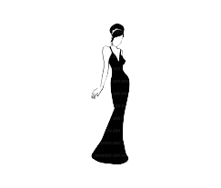
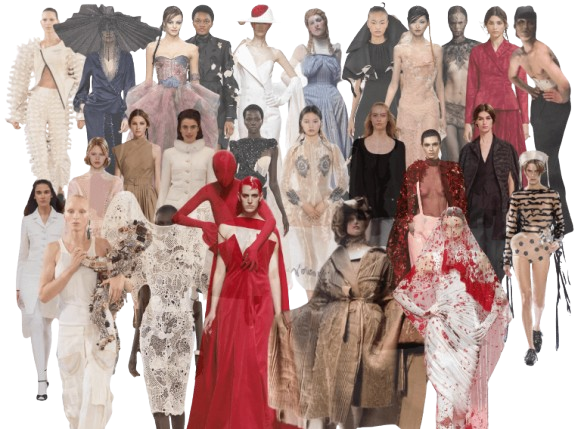

La alta costura


Este tipo de diseño de moda es la confeccion de ropa hecha a medida, utilizando telas y materiales de gran calidad para conseguir un resultado unico e inimitable. La alta costura tiene un importante peso en el ambito de la moda y las pasarelas puesto que marca las próximas tendencias y corrientes estilisticas al mismo tiempo que se encarga de vestir tanto a modelos como diferentes rostros de celebrities.Origenes en París: La alta costura se origino en París en el siglo XIX, cuando la modista francesa Rose Bertin fue nombrada primera diseñadora de moda oficial de Maria Antonieta. Cosida a mano y a medida: La alta costura se refiere a la ropa hecha a medida que se cose a mano.